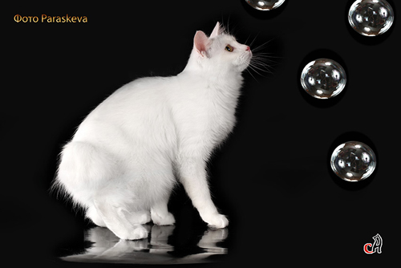

Почему кот?

У нас есть ответы на все "почему" о кошках!
"Почему кот?" - это сайт о кошках, созданный с большой любовью к этим домашним питомцам. Наш сайт сделан начинающим фелинологом, поэтому он будет интересен как любителям кошек, так и профессионалам-кошководам.
Это первый сайт, на котором начинающие заводчики кошек найдут ВСЮ интересующую их информацию. Вам больше не придется задавать глупых вопросов на чопорных форумах опытных заводчиков и по крошкам собирать знания с разномастных сайтов. У нас есть все! А если вы что-то не нашли, значит, мы уже пишем статью по этому вопросу.
Здесь вы сможете узнать и о породах кошек и об окрасах кошек. Мы подскажем вам, как выбрать котенка, как вступить клуб любителей кошек, как подготовить кошку к выставке.
Зачем нужны выставки кошек? Чем кормить кошку? Как приучить кошку к лотку? – на нашем сайте вы найдете ответы на все вопросы, которые вас волнуют. Мы даже попытаемся решить "вечные" дилеммы кошатников: "сушка" или "натуралка"; стерилизовать кошку или нет; купить кошку или кота.
Мы вам расскажем о системах выставок кошек, поможем отличить петербургского сфинкса от канадского и объясним, почему вислоухие британцы - это миф.
Также на "Почему кот?" вы сможете выбрать и зарезервировать котенка курильского бобтейла от Василины Фортейн.
Все материалы доступны по клику на слово MENU на боковой панели сайта.
Приятного вам времяпрепровождения!